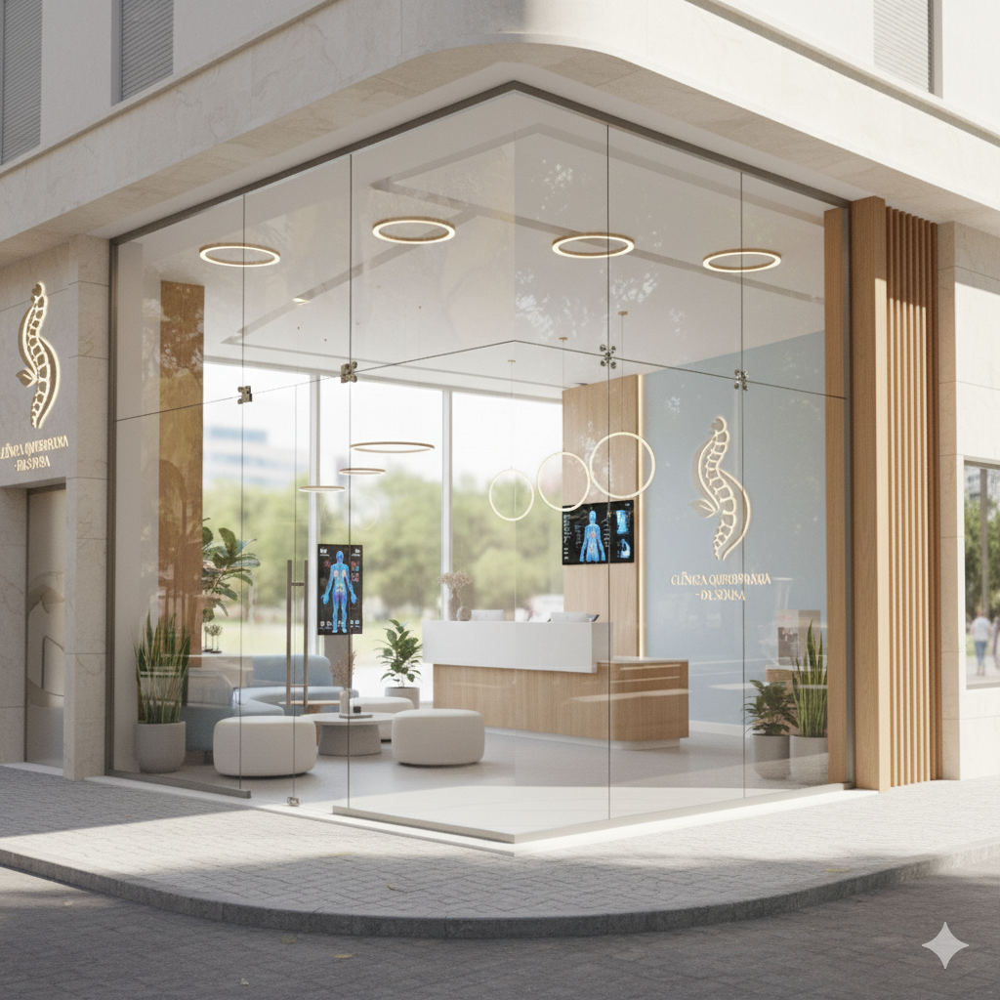
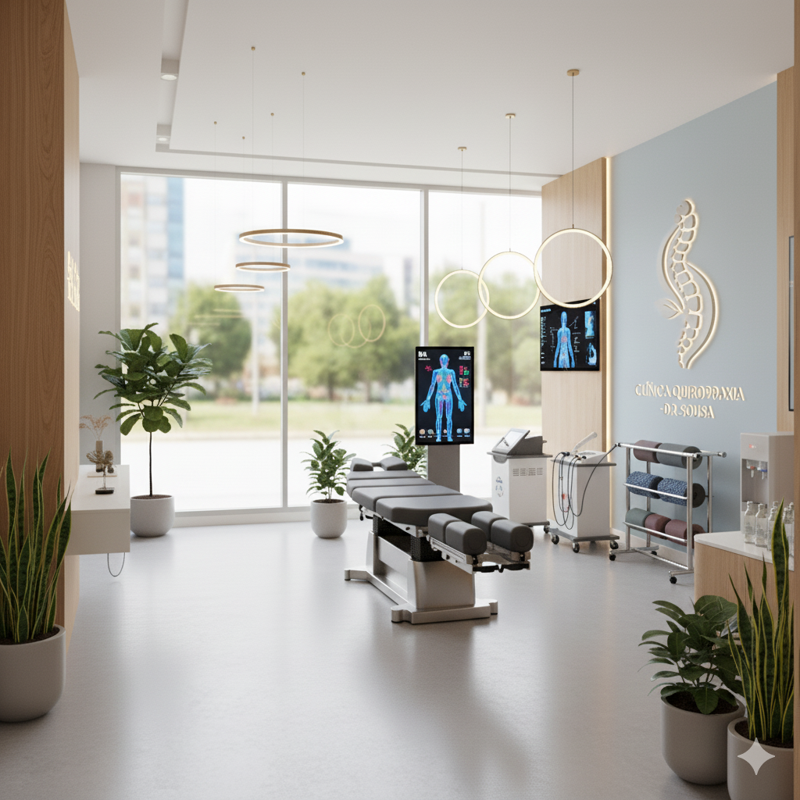
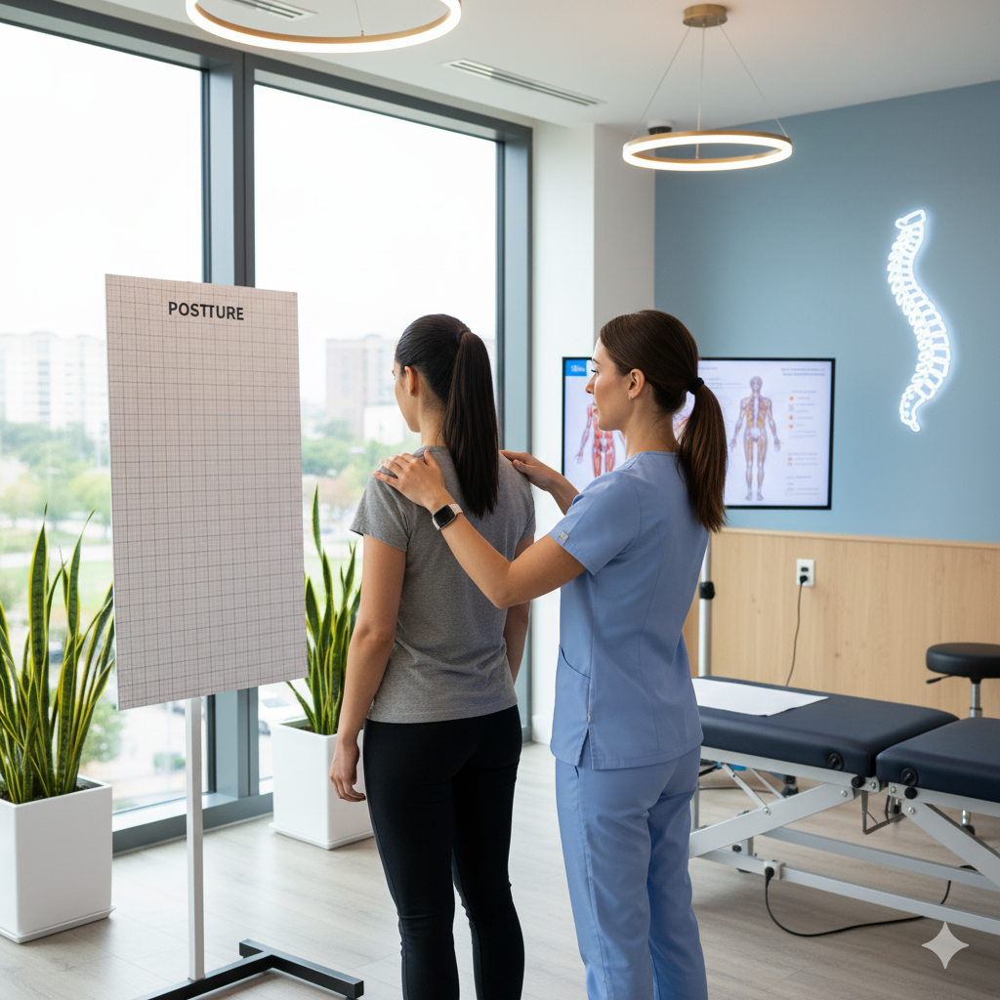
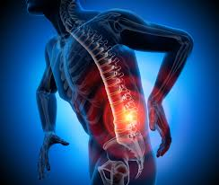
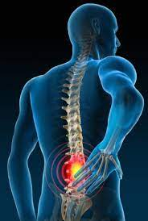

Missão
Apresentar informações educativas sobre movimento, bem-estar e cuidados com o corpo.
Uma apresentação institucional fictícia criada para demonstrar soluções digitais modernas na área de saúde e bem-estar.
A Clínica de Quiropraxia é um conceito fictício desenvolvido para apresentar como um estabelecimento da área de bem-estar pode organizar suas informações e serviços em um site moderno.
O conteúdo apresenta informações gerais sobre quiropraxia, cuidados com a coluna e práticas relacionadas à mobilidade, sempre com caráter educativo e demonstrativo.
As informações desta página não substituem avaliação, diagnóstico ou orientação de profissionais de saúde.

Apresentar informações educativas sobre movimento, bem-estar e cuidados com o corpo.
Demonstrar uma experiência digital clara, acessível e organizada para o segmento de saúde.
Conheça uma representação visual de como pode ser apresentada a estrutura de um estabelecimento voltado ao bem-estar.

O ambiente apresentado nas imagens faz parte da composição visual deste projeto demonstrativo.
A proposta é mostrar como fotografias, textos e informações podem ser organizados para criar uma experiência de navegação agradável e profissional.
Explorar galeriaImagens utilizadas para compor a apresentação visual deste projeto de portfólio.







Uma seção demonstrativa para apresentação de profissionais e suas respectivas qualificações.
Neste espaço poderiam ser apresentados os profissionais, suas formações, experiências e áreas de atuação, mediante informações devidamente verificadas.
Credenciais, registros e qualificações profissionais devem ser informados somente quando confirmados e autorizados.
Conheça alguns assuntos frequentemente relacionados aos cuidados com a coluna, articulações e sistema musculoesquelético.

Desconforto, rigidez e limitações de movimento podem ter diferentes causas. A avaliação profissional é importante para compreender cada situação.

A hérnia de disco envolve alterações nos discos intervertebrais. Os sintomas e as opções de cuidado variam conforme cada caso.

Hábitos cotidianos, ergonomia e movimento fazem parte das conversas sobre postura e saúde musculoesquelética.

Lombalgia é o termo utilizado para dor na região inferior das costas. Suas causas podem ser variadas e precisam ser avaliadas individualmente.

Desconfortos cervicais podem estar relacionados a diferentes fatores, como hábitos posturais, sobrecarga e outras condições.

Existem diferentes tipos de dor de cabeça. A identificação da causa e a orientação adequada são importantes para definir os cuidados necessários.

É uma técnica manual utilizada em determinados contextos de cuidado musculoesquelético, conforme avaliação e indicação profissional.

A dor ciática pode envolver desconforto que se estende da região lombar em direção à perna. A investigação da causa orienta a abordagem adequada.
Conteúdo exclusivamente educativo. As informações não representam diagnóstico, prescrição ou recomendação de tratamento.
Espaço reservado para conteúdos audiovisuais informativos. Os vídeos são incorporados a partir do YouTube.
Conheça uma simulação de interface de agendamento, desenvolvida para demonstrar recursos de interação do site.
Nenhum atendimento ou reserva será realizado.
Transparência sobre a finalidade e os recursos desta aplicação.
Não existe endereço físico. Esta clínica é fictícia.
Não há telefone ou WhatsApp de atendimento.
Este projeto não recebe mensagens ou solicitações.
Interface desenvolvida para demonstrar recursos de apresentação institucional, responsividade e interação.
Não representa uma empresa ou estabelecimento real.